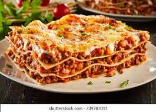

Lasagna Recipe

Description
When you're making breakfast for a crowd, there are no better tools to use than your oven and 9x13 baking dish. These breakfast bakes are easy to assemble and serve, and many come together in the fridge overnight, saving you a ton of work and prep time in the morning. Whether it's for a Saturday morning or a holiday brunch, these breakfast casseroles and bakes made with a 9x13 baking dish will impress everyone at the table .
Ingredients
- 1 (16 ounce) package lasagna noodles
- 1 pound lean ground beef
- salt and pepper to taste
- 1 clove garlic, minced
- ½ pound shredded mozzarella cheese
- ½ pound shredded Cheddar cheese
- 1 pint ricotta cheese
Steps
- Bring a large pot of lightly salted water to a boil. Add pasta and cook for 8 to 10 minutes or until al dente; drain.
- Preheat oven to 350 degrees F (175 degrees C). In a large skillet over medium-high heat, brown beef and season with salt and pepper; drain. Stir in spaghetti sauce and garlic and simmer 5 minutes.
- In a medium bowl, combine mozzarella, Cheddar and ricotta; stir well. In 9x13 inch pan, alternate layers of noodles, meat mixture and cheese mixture until pan is filled.
- Bake in preheated oven for 30 minutes, or until cheese is melted and bubbly.